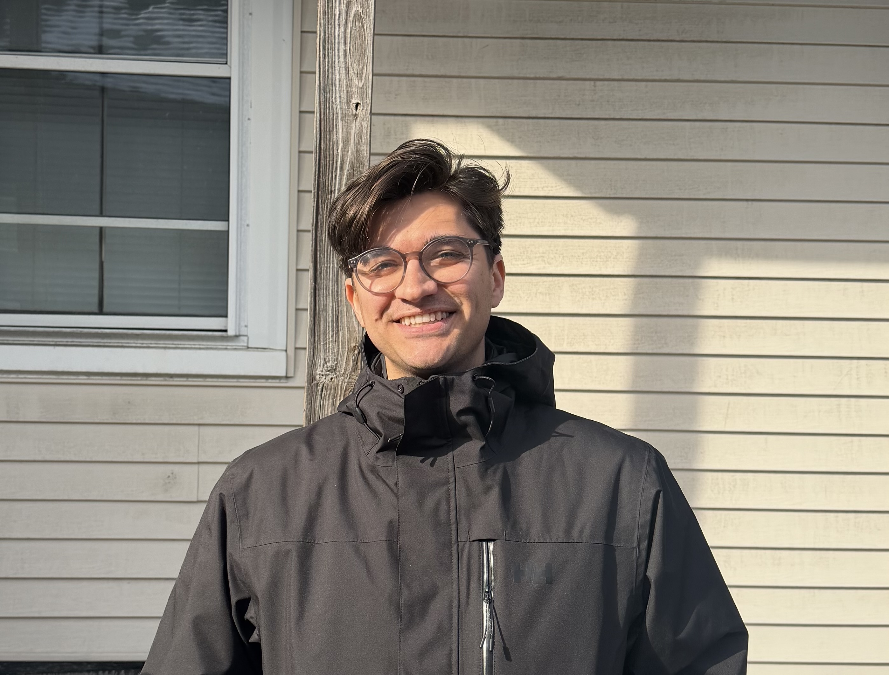

I am a doctoral student in biostatistics at the Harvard T.H. Chan School of Public Health, supported by an NSF Graduate Research Fellowship. My advisor is Rui Duan.
I will join UNC Chapel Hill as an Assistant Professor of Biostatistics in August 2026.
My research develops theory and methods to address challenges arising from large scale, multi-institutional biomedical science. Recently, I am focused on:
Designing interpretable models and integrative methods for data sampled from heterogenous sources.
Developing methods that capture temporal patterns in massive electronic health records datasets and leveraging these patterns in downstream risk prediction tasks.
Understanding fundamental limits of signal detection in high-dimensional, matrix-structured data.
My methodological work relies on tools from nonparametric statistics, high-dimensional probability, and optimization. I have also benefited greatly from ongoing collaborations with the PsycheMERGE consortium.
You can find me on GitHub and Google Scholar.
Knight, P., Zhou, D., Xia, Z., Cai, T., & Lu, J. (2025). Latent Factor Point Processes for Patient Representation in Electronic Health Records. arXiv preprint arXiv:2508.20327. Under revision at Journal of the American Statistical Association (Theory and Methods). (link)
Chhor, J., & Knight, P. (2026). Optimal community detection in dense bipartite graphs. Advances in Neural Information Processing Systems, 38, 130360-130379. (link)
Knight, P., Jobe, N. I., & Duan, R. (2025). Fast and robust invariant generalized linear models. arXiv preprint arXiv:2503.02611. To appear in Journal of Computational and Graphical Statistics. (link)
Knight, P., & Duan, R. (2023). Multi-task learning with summary statistics. Advances in Neural Information Processing Systems, 36, 54020-54031. (link)